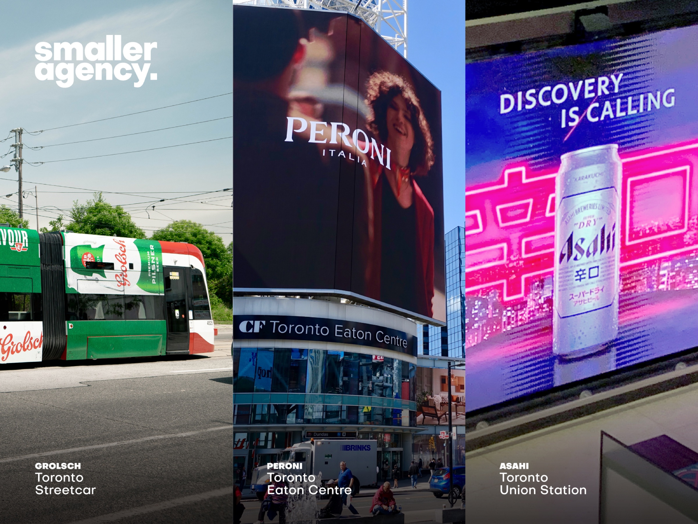

super dry. full volume.
A Japanese beer icon translated for Canadian streets without losing the precision that makes it recognizable.

Bring a global brand into a specific market without diluting it.
Protect the Super Dry codes and design for the pace of Canadian media.
Canadian campaign adaptation and high-impact out-of-home.
One precise brand voice from master creative to local placement.
global consistency. local consequence.
Market adaptation is an exercise in judgement. Change too little and the work can feel imported; change too much and the assets that make the brand valuable disappear.
For Asahi Super Dry, the job was to preserve a sharp, international identity while giving the Canadian rollout enough clarity and scale to work in crowded urban media.
The unmistakable visual codes and dry attitude had to remain intact.
Fast-read hierarchy, bold contrast and layouts built for people in motion.
adapt the format. never soften the attitude.
made for movement.
Transit media asks for an immediate read at changing distances. Product, promise and brand mark were organized to land in that order across tall digital canvases and broader market formats.
The package remains the shortest route to memory.
Fewer competing elements create a faster, cleaner read.
A disciplined layout logic protects the idea as media changes shape.
international by origin. immediate by design.